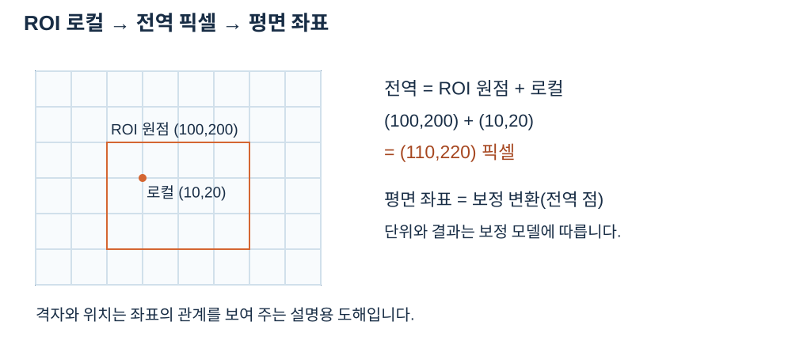

ROI 로컬에서 세계 좌표까지
ROI 원점이 글로벌 (100,200), 로컬 점이 (10,20)이면 글로벌 점은 (110,220)입니다. 보정 X=0.1x+1, Y=0.2y−2 mm라면 세계 좌표는 (12,42) mm입니다. 로컬 점을 보정에 직접 넣으면 원점이 빠집니다. 회전·원근 변환이나 리샘플링 뒤에는 단순 원점 덧셈만으로 이전 영상 좌표를 복원할 수 없으므로 사용한 변환을 함께 추적하세요.


판독 기준
- 월드 좌표의 실제 수치는 보정 모델에 따릅니다.
수치와 도형은 연결된 계약의 핵심 관계를 설명하는 예입니다. 실제 SDK 출력으로 명시한 자료를 제외하면 실행 결과나 장비 실측으로 해석하지 않습니다. 좌표계·입력 형식·수명과 오류 조건은 관련 API 계약을 확인한 뒤 적용하세요.
이 예에서는 영상의 일부를 잘라 ROI로 사용하므로 ROI 안 좌표를 먼저 원본 기준으로 옮깁니다. 로컬 x=10에 원점 x=100을 더하면 글로벌 x=110이고, y도 20+200=220입니다. 다음 단계에서만 글로벌 좌표에 보정식을 적용합니다. 첫 단계와 두 번째 단계를 한 번씩 적용해야 원점이 빠지거나 두 번 더해지는 실수를 피할 수 있습니다.
세계 x는 0.1×110+1=12, 세계 y는 0.2×220−2=42밀리미터입니다. 예제의 두 축 배율이 같지 않으므로 픽셀 거리 하나에 임의의 고정 배율을 곱하는 방식으로 일반화하면 안 됩니다. 다른 영역이나 변환된 영상에 점이 있다면 그 점이 어느 ROI와 어느 영상의 좌표인지 먼저 밝히고, 실제 사용 전에 역변환과 보류점 잔차도 확인하십시오.
적용 순서와 결과 판독
좌표 변환은 순서를 바꾸면 다른 결과가 나옵니다. ROI 로컬 (10,20)에 전체 영상 원점 (100,200)을 더하면 글로벌 픽셀은 (110,220)입니다. 이 예제에서 보정에 의한 세계 좌표는 (12,42) mm이며, 로컬 점을 바로 입력하면 원점 이동을 빠뜨리게 됩니다. 보류 기준 (12.3,42.4) mm와 비교한 거리는 0.5 mm입니다. 이 수치는 합성 대응점에서 계산한 예시이며 새로운 카메라나 다른 ROI에 자동으로 적용되는 값이 아닙니다.
| 확인 단계 | 판독과 조치 |
|---|---|
| ROI 로컬 | 크롭 내부에서 얻은 (10,20)을 읽습니다. |
| 글로벌 픽셀 | ROI 원점과 더해 (110,220)을 얻습니다. |
| 세계 평면 | 해당 보정을 적용해 (12,42) mm로 바꿉니다. |
| 보류 기준 | (12.3,42.4) mm와 비교해 0.5 mm를 확인합니다. |